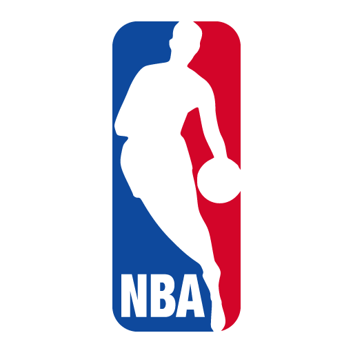
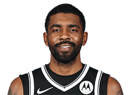

NBA
首页
赛程
球员
精彩集锦
球队
联系我们

凯里-欧文
Kyrie Irving
篮网 后卫 11号
别名
欧文
身高
188cm
体重
88.4kg
臂展
193cm
选秀
2011年第一轮第1位被骑士队选中
薪水
3505万美元
球龄
10年
国籍
美国
学校
美国
球员介绍
凯里-欧文（英文名：Kyrie Irving，于1992年3月23日出生），家乡位于澳大利亚墨尔本。在2011年NBA选秀大会上以首轮第一顺位被克利夫兰骑士队选中，正式成为职业篮球运动员，现效力于布鲁克林篮网队，司职控球后卫。
2011年6月被骑士队选中后，正式开启NBA职业生涯。欧文一位非常有天赋的球员，尤其是在控球方面，他能做到不减速变向过人，运球能力相当娴熟，可以说是观赏性最高的NBA球员之一。2014年，欧文以31分14助攻的成绩当选全明星赛MVP。
2015-16赛季，欧文与詹姆斯再次带领骑士进入总冠军赛，成功复仇勇士队，骑士队夺得队史第一座总冠军。尤其是在最后时刻，欧文命中一记横撤步的三分，奠定比赛胜局，让人历历在目，这就是球星的大心脏能力。
欧文的好胜心非常强，夺得冠军后，他仍然想挑战自己，找到一支属于自己的球队并带领球队打出成绩。2017年，转会到波士顿凯尔特人。2019年7月，欧文与布鲁克林篮网正式签下4年1.41亿合同。2020-21赛季，欧文正式复出。2021 年 10 月 12 日，篮网总经理肖恩·马克斯宣布，由于纽约市COVID-19 疫苗的规定，欧文将没有资格与球队一起比赛或训练，直到欧文接种疫苗。
©2021包头师范学院20级国际班ZYN--web项目
任何内容都不得以任何形式被复制、再传播，或篡改。
有任何的建议和意见，都欢迎联络我:1176164611@qq.com